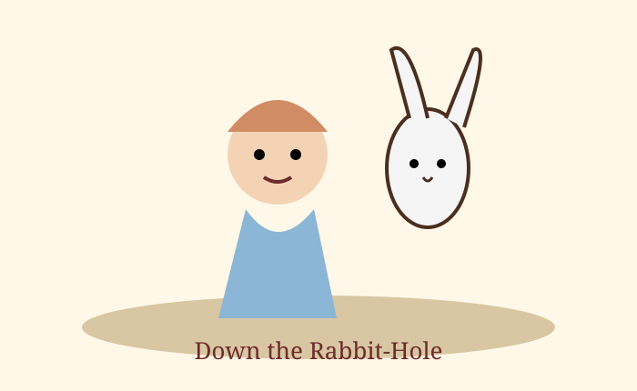

Start Your Adventure
This e-book website presents the first three chapters of Alice's Adventures in Wonderland in a simple online reading layout.

This e-book website presents the first three chapters of Alice's Adventures in Wonderland in a simple online reading layout.
